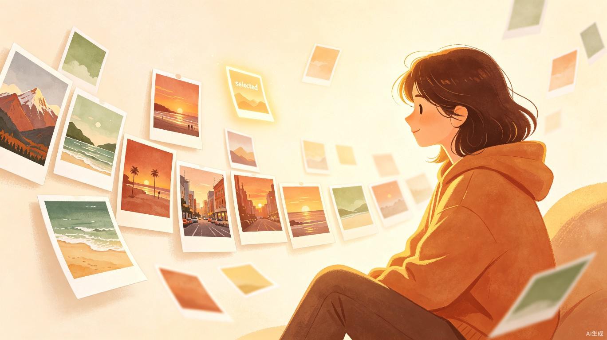
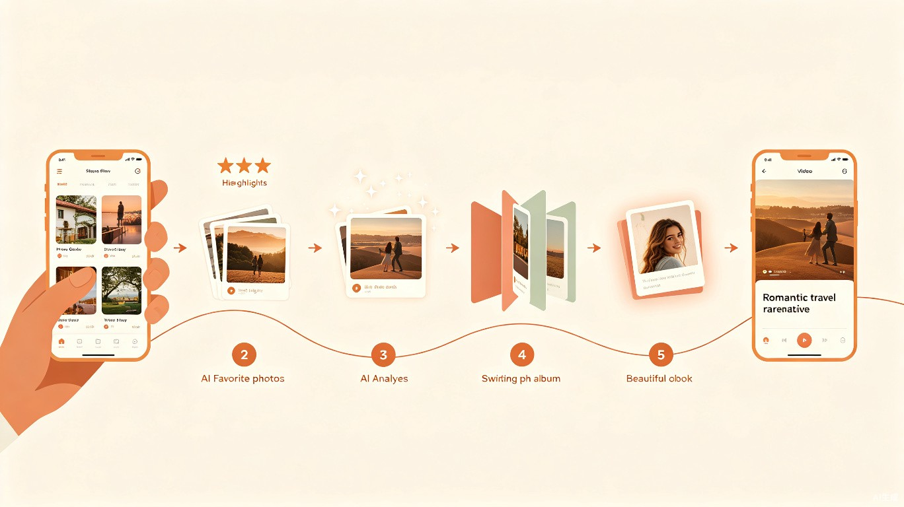
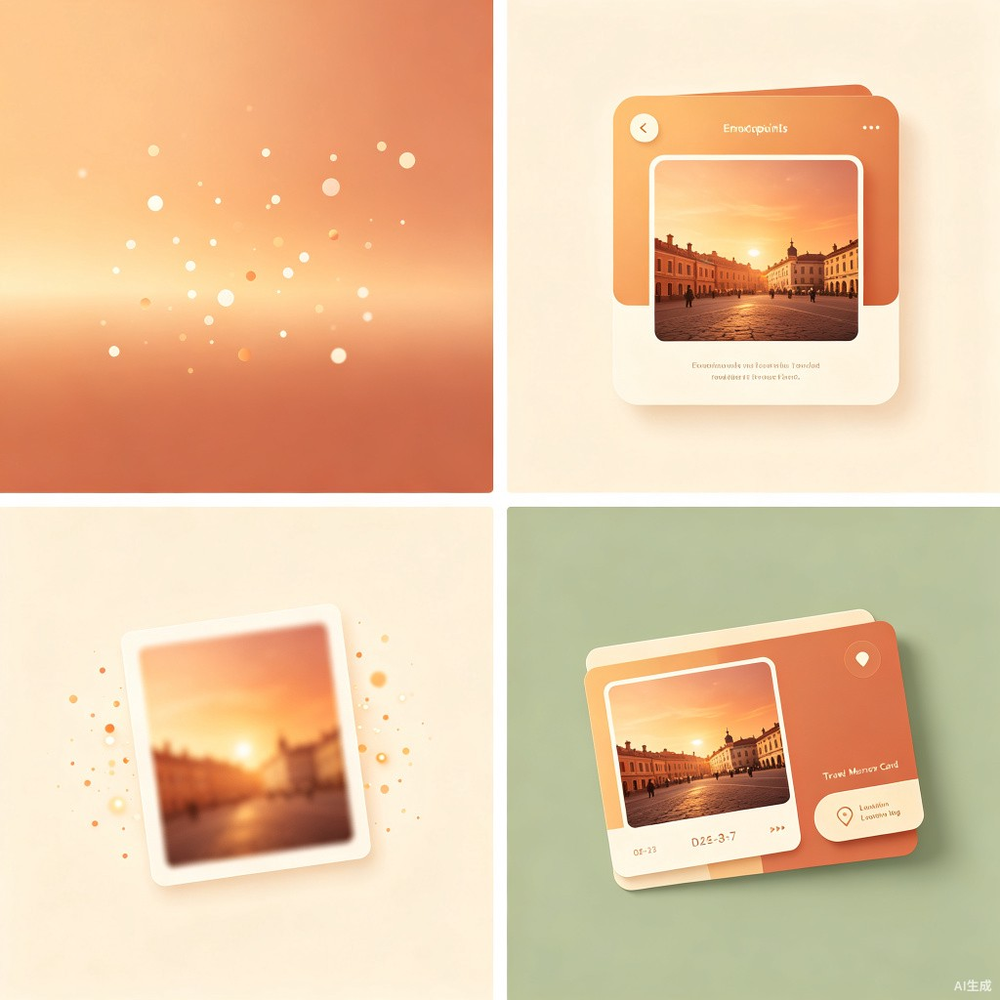

痛点与动机
每一次旅行，我们都会用手机拍下数百张照片。海边的日落、街角的咖啡店、朋友大笑的瞬间——每一张都承载着一段记忆。但旅行结束后，这些照片的命运往往是：全部堆积在相册里，再也没被打开过。
照片越来越多
每次旅行 200~500 张照片，一年积累上千张，手机存储告急。
大量重复与废片
同一个场景拍了 10 张，大部分模糊、构图不佳，但没人有耐心筛选。
找不到想要的回忆
想回忆某次旅行时，在相册中翻找很久，也不一定能找到当时最打动自己的画面。
整理门槛太高
传统相册管理工具操作复杂，需要手动分类、打标签，旅行后的疲惫让人放弃整理。
产品愿景
拾光不是一款照片管理工具，而是一位温暖的"旅行记忆管家"。它做的事情很简单：帮你从数百张旅行照片中，选出最珍贵的那几十张，整理成一本有温度的旅行相册，并可以进一步生成一段短视频和一段浪漫的文案，帮你记录下这段美好的旅程。
产品的核心理念是：
- 去冗存珍 — 用 AI 替你完成繁琐的筛选工作，保留最动人的瞬间
- 仪式感 — 每一次整理都是一次与美好回忆的重逢
- 情感叙事 — 不只是照片集合，而是一段完整的旅行故事
- 隐私优先 — 你的回忆只属于你，核心处理全部在本地完成
核心使用流程
整个产品的使用流程被设计成一段"旅行收尾仪式"，用户只需 6 个简单步骤：

1. 收集照片
旅行结束后打开 App，通过系统相册选择器多选本次旅行的所有照片。也可以在旅行过程中随时将照片加入"收集袋"——边走边收集，回家后直接整理。支持从系统相册、微信收藏、AirDrop 等多个来源引入。
2. 标注 Highlights（可选）
用户可以轻量标记几张最心动的照片为"高光时刻"。操作极简——长按或左滑加星标，一两秒完成。这个标记会作为 AI 筛选的"锚点"，帮助 AI 理解哪些场景对用户更重要。没有标记也不影响，AI 自动筛选本身就够用。
3. AI 智能分析
App 在本地对照片进行多维度分析：感知哈希去重、质量评分（模糊度/曝光/构图/人脸表情）、场景识别（海滩/山脉/城市/美食等）以及场景多样性筛选——确保推荐结果既有代表性又不重复。分析过程中以温暖的文案陪伴用户。
4. 确认与告别
AI 推荐保留的照片以沉浸式大图浏览呈现，用户通过左右滑动快速确认：右滑"留作纪念"，左滑"温柔告别"。告别时有柔和的动画效果，照片仿佛被珍藏到记忆深处。
5. 一键清理
确认完成后，用户一键删除未入选的照片。清理前会显示统计："这次旅行你带回了 326 个瞬间，最终珍藏了 48 个最珍贵的画面。"
6. 创作回忆（可选）
基于入选照片，生成一段旅行短视频（时间线排序 + 转场 + 音乐）和一段浪漫的旅行文案。文案支持多种风格（文艺/温情/幽默/电影旁白），用户可以编辑或让 AI 调整语气。最终成果可以保存为"旅行记忆卡"，也可以分享给朋友。
情感化设计
拾光的灵魂不在于技术，而在于每一次交互都传递温度。以下是贯穿整个产品的情感触点设计：

开篇仪式感
用户选完照片后，不是冷冰冰地跳到分析界面，而是先看到一句温暖的话："你从京都带回了 326 个瞬间，让我帮你找到最珍贵的那些。"每一次启动，都是一次与记忆的温柔重逢。
筛选过程陪伴
AI 分析时不只显示进度条，而是用温暖的文案实时陪伴："正在回忆那天在海边的日落..."、"发现了 47 组相似的画面，帮你留下了最清晰的那张"、"你的朋友在这张合照里笑得很开心"。让等待本身也变成一种享受。
告别仪式
不叫"删除照片"，而叫"和这些瞬间告别"。照片不是缩略图列表，而是大图沉浸式浏览。左滑"温柔告别"时，照片会有柔和的动画——仿佛被收到了记忆深处，带着感激和不舍。
成果呈现
不只是"已生成相册"，而是：一段可以分享的旅行故事（照片 + 文案 + 音乐），一个专属的"旅行记忆卡"——带有旅行日期、地点、精选数量，像一张精美的明信片。文案生成后可以编辑，也可以让 AI 重新调整语气。
视觉设计语言
作为一款情感产品，拾光的视觉设计传递的核心感受是：温暖、治愈、仪式感、珍视。
色彩体系
主色调：琥珀暖橘
传达温暖与珍视，用于品牌标识和关键交互元素。色值参考：#C8653A
辅助色：鼠尾草绿
带来自然与宁静感，用于次要功能和本地处理标识。色值参考：#6B8F71
背景色：米白暖调
营造柔和舒适的阅读氛围，避免冷感的纯白。色值参考：#FDF8F3
点缀色：陶土红
用于 Highlights 标记和重要提醒，传递"珍贵"感。色值参考：#A0522D
字体选择
- 标题与情感文案：衬线体（如 Crimson Pro / Georgia），传递温度感和文学气质
- 正文与功能界面：无衬线体（如 Instrument Sans / SF Pro），保持清晰可读性
- 数据与标签：等宽字体（可选），用于日期、编号等技术信息
动效与声音
- 照片出现时"缓缓展开"效果，像翻阅一本实体相册
- 页面转场使用缓慢、流畅的渐变动画，避免生硬的切换
- 轻柔的触觉反馈（Haptic Touch）——滑动告别时轻微的震动，增加仪式感
- 可选的背景音——整理时播放轻柔的环境音乐
产品命名
产品名称应传递"珍视时光、收藏记忆"的含义。以下是几个候选方向：
技术架构概览
技术架构遵循一个核心原则：优先本地处理，最小化云端依赖。这不仅保护用户隐私，也降低了服务端成本。
AI 能力分工
| 功能模块 | 处理方式 | 技术方案 | 说明 |
|---|---|---|---|
| 图片去重 | 本地 | 感知哈希（pHash / dHash） | 经典算法，计算量极小 |
| 质量评分 | 本地 | Core ML 轻量模型 | 模糊度 / 曝光 / 构图 / 清晰度 |
| 场景识别 | 本地 | Vision 框架 | iOS 原生分类能力 |
| 人脸表情 | 本地 | Vision + Core ML | 检测笑脸、合照人数 |
| 场景多样性 | 本地 | 特征聚类 + 代表性选取 | 确保推荐结果多样 |
| 旅行文案生成 | 云端 | DeepSeek V4 Pro API | 基于场景描述生成文案 |
| 故事线编排 | 云端 | DeepSeek V4 Pro API | 串联照片为完整叙事 |
| 视频脚本 | 云端 | DeepSeek V4 Pro API | 为短视频生成配文 |
| 视频渲染 | 本地 | AVFoundation | 转场、音乐、字幕合成 |
技术栈
DeepSeek V4 Pro 的角色
DeepSeek V4 Pro 是一款拥有 1.6 万亿参数的 MoE 架构大语言模型，支持百万级上下文[1]。在拾光中，它只负责语言创作类任务——生成旅行文案、编排故事线、撰写视频脚本。照片的视觉分析全部由本地模型完成，既保障隐私又降低延迟。
文案生成的数据流：本地模型生成每张照片的场景描述（地点、时间、主体、氛围） → 汇总为结构化信息 → 发送给 DeepSeek V4 Pro → 返回有温度的旅行文案。用户全程不需要等待图片上传，只有轻量的文本请求。
目标用户画像
核心用户
爱旅行、爱拍照、但不会也不想修图的"记录型用户"。他们享受旅行的过程，也喜欢拍照留念，但回到日常后缺乏整理的动力和能力。
高频场景
每年旅行 2~5 次的年轻上班族或情侣。每次旅行产生 200~800 张照片，回家后疲惫，照片直接堆积。隔几个月想回忆时翻找困难。
情感诉求
不只是想"少存点照片"，更希望把一段旅程变成一段有温度的记忆。他们渴望一个帮手，但这个帮手要有"人情味"，不是冷冰冰的算法。
隐私敏感
对照片隐私有较高要求，不愿意上传到不知名的云端服务。"本地优先"的设计让他们安心——最敏感的照片处理永远在自己的手机上完成。
差异化定位
市场上存在多种照片管理和创作工具，但没有一款真正围绕"一次旅行的完整记忆叙事"来做端到端的设计。拾光的独特之处在于：
| 维度 | 系统相册 (iOS/Android) | 美图秀秀 / VUE | 拾光 |
|---|---|---|---|
| 核心定位 | 照片存储与浏览 | 照片编辑与美化 | 旅行记忆叙事 |
| 智能筛选 | 仅重复检测 | 无 | 多维度 AI 筛选 + 去重 |
| 场景理解 | 基于时间/地点 | 无 | 基于视觉内容 + 高光标记 |
| 清理体验 | 手动逐张删除 | 不涉及 | 滑动确认 + 温柔告别 |
| 内容创作 | 自动回忆 (固定模板) | 视频模板 (需手动选图) | AI 文案 + 视频 + 记忆卡 |
| 隐私策略 | 本地 | 需上传 | 核心本地 + 文案可选云端 |
| 情感设计 | 工具型 | 工具型 | 情感陪伴型 |
下一步计划
本创意文档定义了拾光的核心产品概念。以下是建议的推进路径：
Phase 1：核心 MVP 验证
聚焦"照片选入 → AI 筛选 → 确认清理"三个核心步骤。技术重点：本地图片质量评分 + 去重算法。目标：验证用户是否认可"AI 帮我选照片"这个核心价值。
Phase 2：情感体验打磨
在 MVP 基础上增加 Highlights 标记、告别仪式、温暖文案陪伴等情感化设计。重点打磨交互细节和视觉语言，形成独特的品牌调性。
Phase 3：创作功能上线
接入 DeepSeek V4 Pro，上线旅行文案生成、短视频创作、旅行记忆卡等功能。这是产品从"工具"升级为"情感产品"的关键一步。
Phase 4：生态与增长
探索社交分享功能（旅行记忆卡分享）、旅行社区、以及与地图/日记类应用的联动。持续优化 AI 模型，提升筛选准确度和文案质量。